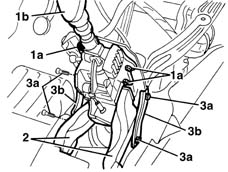
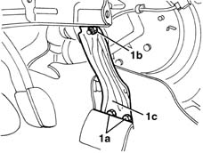
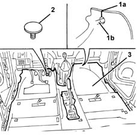

7040L10 cabin floor carpet - r r
- Path
- Procedures > 70 FITTINGS > 7040 BODYSHELL INTERIOR TRIMS AND FITTINGS > 7040L cabin floor covering > 7040L10 cabin floor carpet - r r
- Kind
- repair procedure (removal / refitting; the operation number is the code)
- Applies to
- all engines; all production periods
- Interactive page
- https://sloeber94.github.io/elrnDB-lYpsln/en/#/2429599
Applies to: all engines; all production periods
 Removing
Removing
 Refitting
Refitting7045A13 front seat with side bag r r (right and left)
7050A20 one-piece rear seat cushion - r r
7050A22 rear seat cushion - r+r (alternatively)
7050A14 split rear seat assembly - r+r (alternatively)
7040A26 steering column trim - r+r
5040C12 air conditioner housing - r r with facia disconnected
7040A74 TRIM under control panel - R.R.
7040A11 control panel lid - r + r
5560B10 analogue control panel - r+r
7040L28 tunnel switch panel - r r
7040L22 REAR TRIM on TUNNEL -R.R.
7040A18 glove compartment on facia - arrange
7040A30 Left instrument panel lower TRIM - R.R.
2125A30 lever/knob cover - r + r
7040A28 TRIM on gearbox control panel - R.R.
5505A25 SWITCH UNIT for OPTIONAL EQUIPMENT - R.R.
5040D18 air conditioner control unit - r r
5580C26 LOCK BARREL KEY/SWITCH for deactivating passenger 'AIR BAG - R.R.
7040A10 instrument facia trim - r+r
7040L40 front compartment scuff strip - r r
Remove the front seat belt lower mounting brackets, after having released the plugs and undo the bolts.
Loosen the side bolts fixing the dashboard mounting crossmember.
1. Undo the three nuts (1a) and fold the gear lever assembly (1b) backwards.
2. Remove the two rear seat air connectors.
3. Undo the bolts (3a) and remove the brackets (3b).

Applies to: all engines; all production periods
1. Undo the lower bolts (1a) and the upper nut (1b). Keep the left side bracket (1c).

Applies to: all engines; all production periods
1. Cut the carpet along section (1a) to release it from the condensation drainage pipe (1b) for the air conditioning.
2. Undo and remove the mechanical end of travel located under the accelerator pedal.
3. Remove the carpet, releasing it from underneath the air conditioning assembly.

Applies to: all engines; all production periods
Refitting
RemovingCheck that the carpet is undamaged.
Position the carpet.
Tighten the accelerator pedal end of travel.
Check that the carpet is correctly positioned.
Position the crossmember mounting brackets and secure them using the bolts and the nut.
 | Fastening | Component | Ø | Value (daNm) |
|---|---|---|---|---|
- | Bolt | DASHBOARD CROSSMEMBER BRACKET | M8 | 2.0 |
| Fastening | Component | Ø | Value (daNm) |
|---|---|---|---|---|
- | Nut | DASHBOARD CROSSMEMBER BRACKET | M8 | 2.0 |
Position the rear seat air connectors.
Position the gear lever assembly and fasten it using the nuts.
Tighten the side bolts fixing the dashboard mounting crossmember.
| Fastening | Component | Ø | Value (daNm) |
|---|---|---|---|---|
- | Bolt | FACIA TRIMMOUNT BEAM | M12 x 1.25 | 4.0 |
Position the front seat belt lower mounting brackets, secure using the bolts and fit the plugs.
| Fastening | Component | Ø | Value (daNm) |
|---|---|---|---|---|
- | Bolt | SEAT BELT MOUNTING BRACKET | M8 | 2.0 |
7040L40 front compartment scuff strip - r r
7040A10 instrument facia trim - r+r
5580C26 LOCK BARREL KEY/SWITCH for deactivating passenger 'AIR BAG - R.R.
5040D18 air conditioner control unit - r r
5505A25 SWITCH UNIT for OPTIONAL EQUIPMENT - R.R.
7040A28 TRIM on gearbox control panel - R.R.
2125A30 lever/knob cover - r + r
7040A30 Left instrument panel lower TRIM - R.R.
7040A18 glove compartment on facia - arrange
7040L22 REAR TRIM on TUNNEL -R.R.
7040L28 tunnel switch panel - r r
5560B10 analogue control panel - r+r
7040A11 control panel lid - r + r
7040A74 TRIM under control panel - R.R.
5040C12 air conditioner housing - r r with facia disconnected
7040A26 steering column trim - r+r
7050A20 one-piece rear seat cushion - r r
7050A22 rear seat cushion - r+r (alternatively)
7050A14 split rear seat assembly - r+r (alternatively)
7045A13 front seat with side bag r r (right and left)
Topics linked from this page (24)
- 2125A30 lever/knob cover - r + r
- 5040C12 air conditioner housing - r r with facia disconnected
- 5040D18 air conditioner control unit - r r
- 5505A25 SWITCH UNIT for OPTIONAL EQUIPMENT - R.R.
- 5560B10 analogue control panel - r+r
- 5570T80 car radio unit - r+r
- 5580C26 LOCK BARREL KEY/SWITCH for deactivating passenger 'AIR BAG - R.R.
- 7040A10 instrument facia trim - r+r
- 7040A11 control panel lid - r + r
- 7040A18 glove compartment on facia - arrange
- 7040A26 steering column trim - r+r
- 7040A28 TRIM on gearbox control panel - R.R.
- 7040A30 Left instrument panel lower TRIM - R.R.
- 7040A74 TRIM under control panel - R.R.
- 7040H50 rear panel - r r
- 7040L20 tunnel trim - r r
- 7040L22 REAR TRIM on TUNNEL -R.R.
- 7040L28 tunnel switch panel - r r
- 7040L40 front compartment scuff strip - r r
- 7045A13 front seat with side bag r r
- 7050A10 rear seat - r+r
- 7050A14 split rear seat assembly - r+r
- 7050A20 one-piece rear seat cushion - r r
- 7050A22 rear seat cushion - r+r